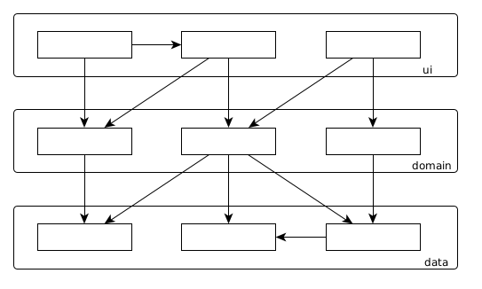
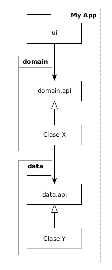
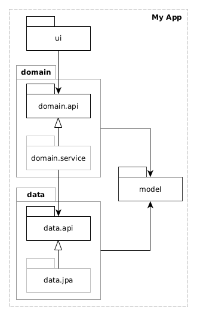
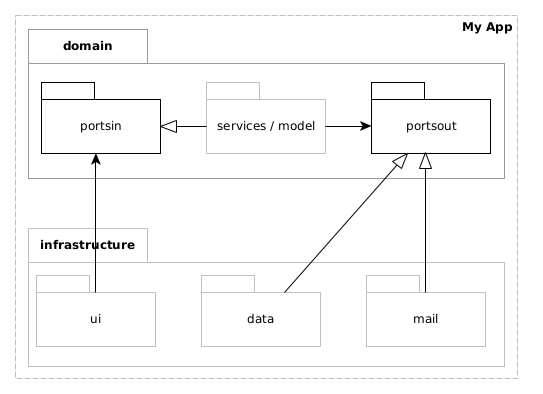
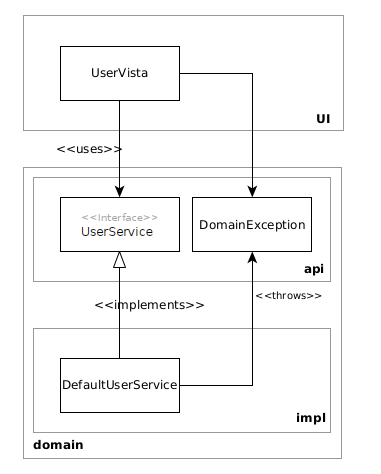
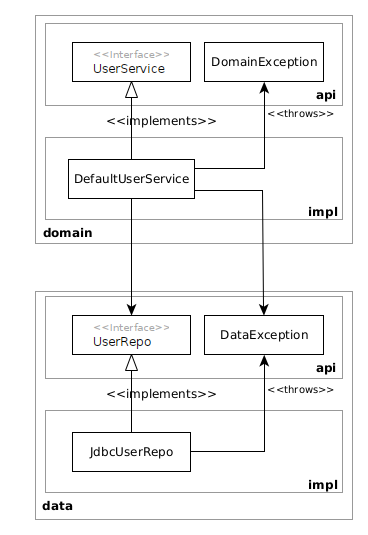
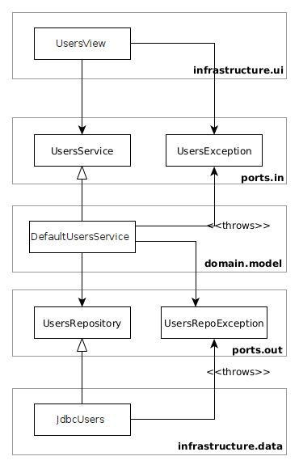

Separación en Capas
Enrique Molinari
Estructura de Layers (Capas)
¿Por qué debemos partir una aplicacion en capas? y ¿Por qué definir sus relaciones y respetarlas?
Porque cuando hagamos un cambio tendremos noción de donde éste repercute.
Layered Architecture
¿Acá tenemos noción donde repercute un cambio?
Layered Architecture

¿y... acá? Esto sucede si no tenemos disciplina!
Estructura de Layers (Capas)
¿Existe en Java la keyword Layer?
Debemos encontrar en el lenguaje de programación que utilicemos, que abstracción (estructura sintáctica) podemos utilizar para crear éstas capas.
¿Cuáles son las opciones en Java?
Desde Java v1, los paquetes. Java v9 incorporó la construcción sintáctica module.
Estructuras de Capas
Ok. Tenemos que estructurar aplicaciones Java utilizando paquetes. ¿Qué opciones tengo?
Arquitectura en Capas y Arquitectura Hexagonal
Package by Layers Clásica
Package by Layers (con modelo compartido)
Arquitectura Hexagonal (o ports and adapters)
Exceptions pertenecen a una capa
Exceptions pertenecen a una capa
Exceptions en Hexagonal
